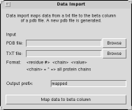

<!--#set var="TITLE" value="Data Import Plugin, Version 1.0"-->
<!--#include virtual="/Research/vmd/include/header-vmd.shtml"-->

<table border="0">
<tr>
  <td rowspan="4">
  <p>
  This plugin provides an easy method for importing simple text files 
  containing residue number, chain, value triplets into the "beta" field
  of a newly PDB generated PDB file.
  </td>

  <td>   
  
  <br><b>Data Import Window</b> 
  </td>
</tr>
</table>

<!--#include virtual="/Research/vmd/include/footer-vmd.shtml"-->

